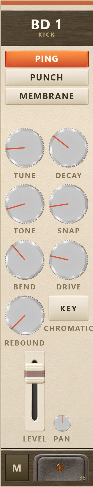
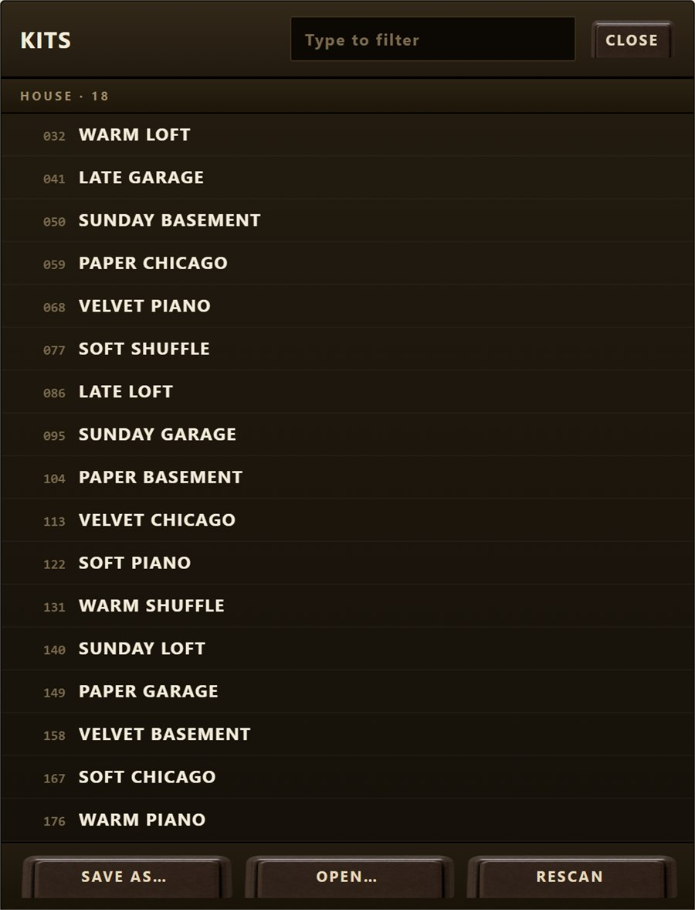

Twelve channels that behave like one kit in one room.
User Manual
Quick start · Reference · Try this
Version 1.0
August 2026 · Windows VST3 · build 260827.22
01
What this is
Introduction
An analogue drum machine with twelve voices, a thirty-two step sequencer and two
hundred kits. Nothing in it is sampled and nothing in it is a clone: every voice is built from the
same handful of mechanisms, which is why the machine sounds like one machine rather than twelve
circuits sharing a jack.
The thesis, in one paragraph
A drum machine is usually twelve independent synthesisers wired to a mixer. The parts never
quite belong together, and everyone reaches for bus compression to fake the missing glue. This one
is built the other way round. Hit the snare and the toms ring, because THE WEB lets any
trigger excite the other channels' resonators. Everything feeds one shared shell, KIT BODY.
Everything shares one power rail, so a hard kick dips the whole machine in level and pitch
for a few milliseconds — which is the part a compressor cannot imitate. And AGE gives every
channel its own component tolerances, drifting slowly, so no two hits are quite identical.
At zero, every one of those is exactly absent. The machine will render bit-identically with the
glue switched off, so you can hear precisely what each one is doing.
What it is made of
Twelve voices
Two kicks, two snares, three toms, a percussion wildcard, closed
and open hats, two cymbals — in the order every classic machine uses, read from the floor
upward.
No VCA
On the ping models DECAY is the resonator's Q, the way the 808
did it. There is no amplitude envelope shaping a tone; the circuit rings and stops ringing.
Sequencer
32 steps, 16 patterns, per-lane length, division, direction and swing.
Derived from the host's bar position, not counted, so looping and relocating are free.
200 kits
Generated from a seed, filed by category, each with a name. The same
number is the same kit on any machine, forever.
MIDI first
The sequencer is optional. Play it from a pad controller and it never
argues with your DAW.
Thirteen outputs
Main stereo plus a mono aux per channel, all off by default
until a host asks for them.
There is no ACCENT channel. Every classic machine has one, first on the
selector, and you will look for it. Accent here is per step — a velocity on each step of
each lane — which is the same idea in its modern form and rather more use.
02
Thirty seconds
Quick start
Put it on a MIDI track. It answers the General MIDI drum map, and also C3–B3 for the
twelve channels in panel order — whichever your controller sends.
Turn the kit dial. The arrows either side of the display step through two hundred
kits; clicking the display opens the browser, where they are filed by category. RANDOM on the
left rail throws you somewhere at random.
Press STEPS and draw something. Click a cell to turn it on. Press the ▶ key and it
runs, on your DAW's tempo if the transport is rolling and on its own if not.
Turn RAIL SAG up. Then play the kick hard. That is the machine breathing — one supply,
shared by twelve voices.
Turn REBOUND up on the snare. A little is a flam, more is a drag, a lot is a buzz
roll. One knob for three techniques that are otherwise miserable to program.
The VOICES page. Twelve strips, every knob visible at once — the tactile wall is
most of the point. The rail on the left switches pages and holds the things you reach for
while playing; MASTER is the strip on the right.
03
The twelve channels
Voices
Kick, snare, toms low to high, percussion, then metal. Two conventions are
near-universal in the tradition and both are kept: the toms run low to high left to right, and the
percussion voice sits between the toms and the metal — which is exactly where the 808 put its
claves and cowbell.
Channel
Models
What it is
BD 1 · BD 2
PING / PUNCH / MEMBRANE
Two kicks so you can have a long one
and a short one, or a body and a click, without robbing another voice.
SD 1 · SD 2
SHELL / WIRES / CLAP
CLAP is a snare model rather than its
own channel — a clap is a snare drum played by a crowd.
TOM 1–3
MEMBRANE / CONGA / BLOCK
Three is the classic count; the 808 and
the 909 both had three.
FX
BELL / WOOD / ZAP / VOX
The wildcard, in the tradition's percussion
slot. WOOD and BELL are the claves and the cowbell.
CH · OH
CRASH / RIDE / SPLASH
Closed and open hat, shipped LINKed — see
below.
CY 1 · CY 2
CRASH / RIDE / SPLASH
Multi-band decay, so the top goes
before the body does, the way a real cymbal dies.
The hat is two channels that behave like one
A hi-hat is not one instrument, it is a pair of cymbals with a pedal, and its whole
musical function is that the open one is cut off by the closed one. Two channels buy four things a
single dual-trigger circuit could not: its own sequencer lane — decisive, you want a CH lane and an
OH lane rather than an openness flag per step — its own aux out, its own level and its own pan.
What that risks losing is that they are one pair of cymbals. So the pair ships LINKed
(the button on the left rail): OH mirrors CH's tune and model, and CH chokes OH hard. Unlink and
they are independent, which is occasionally wanted and always physically wrong — so link is the
default, because the correct thing should be the easy thing. When linked, OH's TUNE and MODEL show
and drive the pair, and are ringed to say so.

One strip: model, six knobs, REBOUND, KEY, level, pan, mute and the trigger pad
with its MIDI note.
The six knobs
TUNE
The resonator's frequency. On the metal channels it also moves the band
filters, because that is where their pitch actually lives.
DECAY
On the ping models this is the Q. There is no VCA: the circuit
rings for as long as it rings.
TONE
The balance of body against noise, and where the noise sits.
SNAP
The attack transient — the stick, before the drum has decided what note
it is.
BEND
The pitch envelope. Every good kick is a falling note.
DRIVE
Saturation into the channel's own limiter.
Underneath, two mechanisms work without a knob: hitting harder makes the
drumhead tense, so a hard hit starts sharp and settles; and the resonator's damping
depends on amplitude, so a loud hit does not simply sound like a quiet one turned up.
REBOUND, and KEY
REBOUND turns one trigger into a modelled bounce: shortening intervals, falling velocity,
the way a stick actually behaves on a head. Low is a flam, middle a drag, high a buzz roll.
KEY makes the channel chromatic. MIDI notes track the resonator properly, and the decay
scales with pitch so a low note rings longer, like a real one. A tuned kick is the most-used trick
in modern production and very few drum machines do it correctly. The exact drum map is consulted
first, so a channel in KEY mode never steals another channel's note.
04
The glue
One machine, not twelve
Five controls sit above the strips and none of them belongs to a channel. They are
what makes the twelve behave like one kit, and each of them is exactly absent at zero.
RAIL SAG
One power supply, shared. A hard hit pulls it down and everything dips
for a few milliseconds — level and pitch. The pitch component is why sag glues in a
way a compressor cannot: a compressor can duck the level, but it cannot make the whole kit
sag flat for an instant and spring back.
KIT BODY
One resonator that every channel feeds, with its own tuning and decay.
The shell the machine sits in. Not a reverb — the world rack has a reverb — a coupling.
BLEED
THE WEB. Any trigger excites the other channels' resonators
without firing their envelopes, so a snare rings the toms and a kick buzzes the hats. This is
the thing bus compression is trying to fake, and it costs almost nothing because the
resonators are already there.
AGE
Per-channel component tolerances that drift slowly, so no two instances are
identical and no two hits are. At zero, determinism is bit-exact.
KIT TUNE
Transposes the whole machine two octaves, metal included.
KIT MORPH, and the A / B slots
A and B are slots, not switches. Press A and it holds whatever the machine is
doing at that moment; change the machine as much as you like; press B. The MORPH knob then
blends between the two — every continuous parameter interpolated, every switched one flipping at
its own threshold along the way, so the kit changes character rather than cross-fading.
MORPH is dim until both slots hold something, because until then there is nothing to morph
toward. Pressing a lit slot again re-captures it; shift-clicking empties it.
The morph moves the panel too. It is applied to the engine's copy of the
parameters and never written back to the knobs — a fader that silently rewrote a hundred controls
would wreck both its own automation and theirs. But the panel computes the same blend for display,
so the knobs sweep as you move the fader even though nothing has been overwritten.
THE HAND
On the STEPS page, FEEL and GRIP humanise the playing — and not by adding random
milliseconds, which never sounds human. A drummer has limbs, and a limb cannot play two things at
once: the second hit displaces, which is where flams come from by themselves. Add a little push
and pull per subdivision and some velocity carried over from the previous hit on the same limb,
and the machine breathes instead of stuttering.
05
The sequencer
Steps
Thirty-two steps, twelve lanes. The dimmed columns are past the lane's LAST step —
they hold what you drew, they simply are not in the loop. Each lane's LAST, DIV, DIR and SWNG
sit at the right-hand end of its row.
How it keeps time
Every step is derived from the host's bar position rather than counted forward. That
is not a detail: it means looping, relocating and tempo changes are free and exact, and a bounce
matches what you heard. Measured against the host clock, the worst placement error is one sample.
With no transport rolling it free-runs on the TEMPO knob, and the moment your DAW starts, the DAW
takes over.
The transport
▶ RUN
Starts from step one.
❚❚ PAUSE
Stops where it is; press again to continue from there. SPACE does this
too. Two keys rather than one toggle, because "start again" and "carry on" are different
intentions and a single button has to guess which you meant.
■ STOP
Stops and rewinds to step one.
● RECORD
Writes what you play — pads or MIDI — into the current pattern, at the
nearest step of that lane. Not the step just passed: quantising backwards makes
everything you played sound late.
Per lane, and per step
LAST
Where that lane's loop ends, 1 to 32. Set the hats to 16 and the toms to 12
and they drift against each other for four bars before they agree again. Right-click a step to
set LAST there.
DIV
The lane's clock division, so one lane can run at half or double speed.
DIR
Forward, reverse, pendulum or random.
SWNG
Swing per lane, which is how grooves actually work — swung hats
over a straight kick.
Shift-click a step to select it, then use the five knobs below
VELOCITY
The accent, per step. Fifteen decibels of range, not five.
CHANCE
How often that step actually fires.
RATCHET
Two to eight hits in the space of one, with their own ramp.
MICRO
Nudge the step off the grid, ahead or behind.
CONDITION
Play every other pass, every fourth, on fills, off fills, or only if
the previous conditional step played.
PATTERN chooses one of sixteen; BARS stretches the thirty-two steps over one bar
or two; COPY takes the current pattern somewhere else and CLEAR empties it.
06
Kits and patches
Two hundred, then your own

Two hundred kits, filed by category and filterable.
The two hundred
Each kit is generated from its number, so the same number is the same kit on any machine
and always will be. The category is decided first and the parameters are then made to
fit it — which is why a kit filed under TECHNO sounds like techno rather than being labelled
after the fact. The names are built from grids that share no nouns between categories, so all
two hundred are unique.
The arrows either side of the display step through them; clicking the display opens the
browser; RANDOM dials one at random.
Your own patches
SAVE writes a .fmrkit file — the whole machine, sequencer and world rack
included. LOAD opens one. A loaded patch names itself on the display in red, marked
USER PATCH, and dialling a kit takes it back.
Patches live in Documents\Brokild patches\Full Metal Racket, where every
Brokild plugin has a folder of its own — deliberately not beside the installed
.vst3, which is somewhere an installer can reach and replace.
Loading always starts at step one. With a host rolling, every step is
derived from the bar so this was already true; free-running, the internal clock used to keep
whatever phase it had. Loading a patch, dialling a kit, RUN and STOP all put it back to the
top.
The world rack
The teal globe at the foot of the rail opens Brokild World FX — the same rack of effects
and the same SPECTRA characters that live in every Brokild instrument. A rack built here will open
in any of them. It is empty by default and adds nothing until you put something in it.
The SPECTRA characters reach further than the effects do: they possess the machine itself,
detuning, panning and sagging the twelve voices from the inside rather than treating the mix.
07
Try this
Recipes
A kit in one room
Any kit. BLEED to about 40, KIT BODY to 30, RAIL SAG to
50. Play a kick and snare pattern with nothing else.
The toms you are not playing start answering the snare, and the whole machine
dips under the kick. This is the sound bus compression is an apology for.
A bassline out of the kick
BD 1 to the MEMBRANE model, KEY on, DECAY long,
BEND low. Play notes an octave below middle C.
A tuned kick that holds pitch and rings longer down low, because the decay
scales with the note.
The polyrhythm
Hats LAST 16, toms LAST 12, kick LAST 32. Draw something
simple in each.
Three loops of different lengths that agree only once every four bars. Nothing
else on the panel needs touching.
A drummer, not a grid
A busy hat pattern. GRIP to 60, FEEL to 40, per-lane
SWNG on the hats only.
Flams appear where two limbs collide, the hats lean forward, and none of it
is random jitter.
One fader, two kits
Dial a kit, press A. Dial a very different one, press B.
Automate MORPH across eight bars.
The kit changes character rather than cross-fading, because the switched
parameters flip at staggered points along the way.
The buzz roll
SD 1, REBOUND up to about 70, one step per bar. Then try 20.
At 70 a press roll; at 20 a flam. One knob, and the intervals shorten the way
a real stick does.
08
Installing, and the rest
Reference
Unzip. Copy the whole Full Metal Racket.vst3folder — not just
the file inside it — into C:\Program Files\Common Files\VST3\. A sub-folder such
as ...\VST3\Brokild\ is fine; hosts look inside. Windows will ask for
administrator permission, which is normal.
Rescan. In Ableton Live: Preferences → Plug-Ins → Rescan. It appears as an instrument
called Full Metal Racket, by Brokild.
Or just run it.Full Metal Racket.exe in the same zip is the standalone.
No installation needed.
Settings
SETUP on the rail holds the things that belong to your machine rather than to the patch:
the button finish (black or metal), and the panel light. Both are saved on this computer and not
in the project, so a session always sounds the way it was saved even if it looks different.
The panel light is a gamma curve rather than a brightness control — it lifts the shadows, where
everything on a panel this pale actually lives, and leaves the highlights alone instead of
flattening them.
Outputs and oversampling
Main stereo, plus one mono aux per channel, all disabled until the host enables them. The
2X button on the rail sets oversampling: 1× is about six percent of a core, 2× ten, 4×
eighteen. Offline renders are not forced to a higher rate — what you hear is what you get.
What the bench proves
Every build is run through an offline bench that renders real audio and measures it: tuning
within half a cent, a played octave at 2.0004, fifteen decibels of velocity range, sequencer
placement inside one sample of the host clock, every one of the two hundred kits bounded and
audible and unlike every other, and no channel ringing past its own decay. Sixteen hundred and ten
checks at the time of writing. It is run after every change to the sound, and the numbers in this
manual come from it rather than from anybody's opinion.
If the window comes up blank, install the free Microsoft Edge WebView2
Runtime and reopen the plugin. The interface is drawn in a WebView2 surface, which every current
Windows 10 and 11 already has. The audio keeps working with the window shut either way.
Full Metal Racket — Brokild Apps. Build 260827.22, August 2026.
Native C++ audio, JUCE 8, interface drawn in a WebView2 surface. Panel decals generated to
specification and composited from measured crop regions. Free: no installer, no account, no
telemetry, no network access at all.
Peter Boggild / Brokild, August 2026.